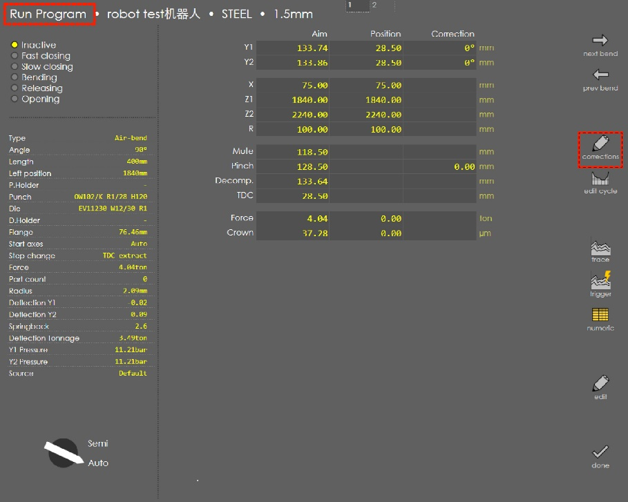

Operating mode key switch
Note
The key switch for the robot operating mode has the ID. 1367012, the label for the key switch has the ID no. 1766724
The key switch is mounted externally on the left of the electrical cabinet. With the robot interface (option), the robot can be activated/deactivated using the key switch.
The key switch has the following positions:
Description
Manual mode: stroke triggering by means of the foot switch
Robot mode: stroke release by the robot and subsequent stroke triggering at the press brake. Teach mode and automatic mode are possible.

In manual mode, the operator triggers the downward movement of the press beam using the PRESS BEAM DOWN foot switch. The bending program run is advanced manually by the operator as required.
In robot mode, the downward movement of the press beam is triggered simultaneously by the industrial robot and the press brake. The entire bending program is started fully automatically and is executed synchronously. Robot mode is selected in the automatic mode and in the teach mode of the work cell. The bending program of the press brake and the travel program of the robot are synchronized so that they can work together. The foot switch remains connected to the press brake.
Robot mode
In robot mode, the programs should be setup.
Step change setting:Run – Program – Edit cycle.

Select TDC + External in step change.

Work mode setting:Run – Program – Corrections

Click
.

Choose Field muted in Work mode.

Manual mode
Step change setting:*Do not* choose TDC + External in Step change*.*
Note 1
The operator must ensure that the industrial robot is positioned in a safe parking position in manual mode, cannot be operated and cannot be switched back on.
Note 2
Always leave the foot switch plugged in while the robot is in operation. The EMERGENCY STOP is active, so the EMERGENCY STOP push-button is fully functional. If a second foot switch is connected, then this EMERGENCY STOP switch is also always active, as all EMERGENCY STOP push-buttons in a circuit are wired in series. For a TruBend press brake, the second foot switch is always connected in the same way, with or without a robot interface.
Note 3
Correct and problem-free functioning of the TruBend press brake with an industrial robot is only possible if the robot is wired correctly (see section 11.2 Defaults for the XS7 plug, page 25, and section 11.4 XS 7 plug and XS 7.1 plug signal assignment, page27). If no robot is plugged in, then the EMERGENCY SHUTDOWN circuits of the robot interface must be bridged with the dummy plug XS7.1(Plug Shell: 1836632, Plug insert 0142923, Contact 0093905, Cable 2372482).

The automatic circuit breaker with tripping characteristic C4 must be switched through for the robot interface to function. If this automatic circuit breaker triggers, a short circuit in the interface and/or a short circuit in the industrial robot’s connected peripheral circuit can be assumed.
Foot switch
Foot switch 1 is directly connected to the robot interface. The 15-pin plug of the robot interface itself uses the plugging position of foot switch 1.
Note
The robot interface and foot switch 1 may never be plugged in parallel since the blank holder would as a result not be able to perform any strokes. Foot switch 2 is plugged as usual.